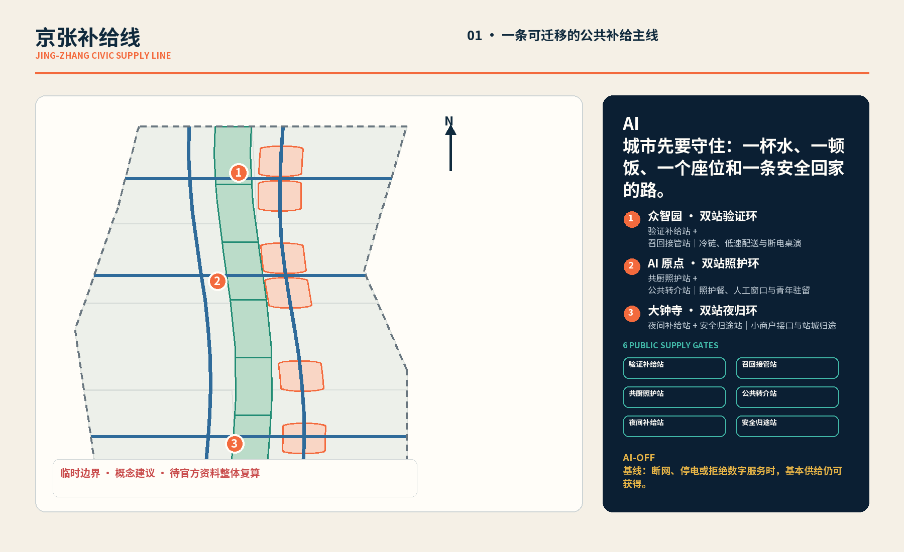
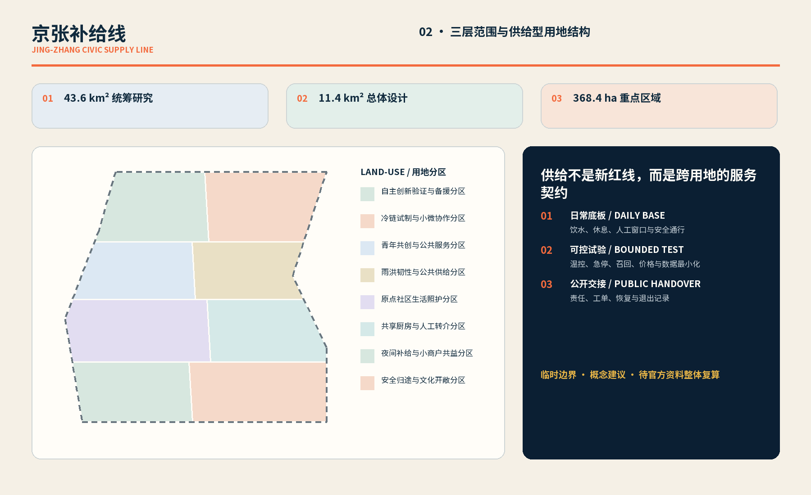
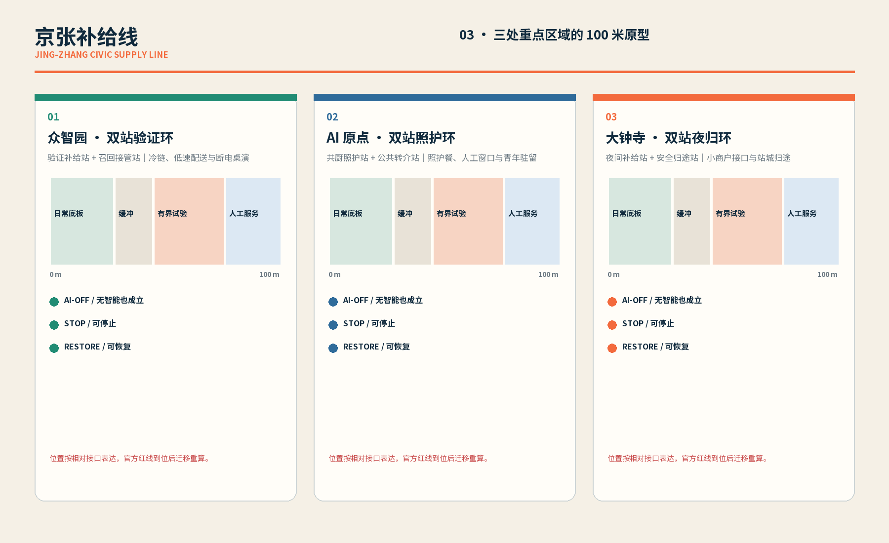
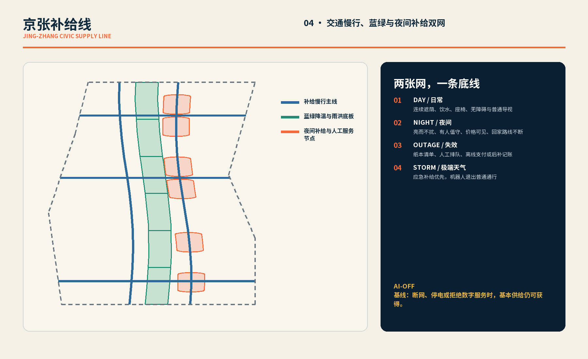
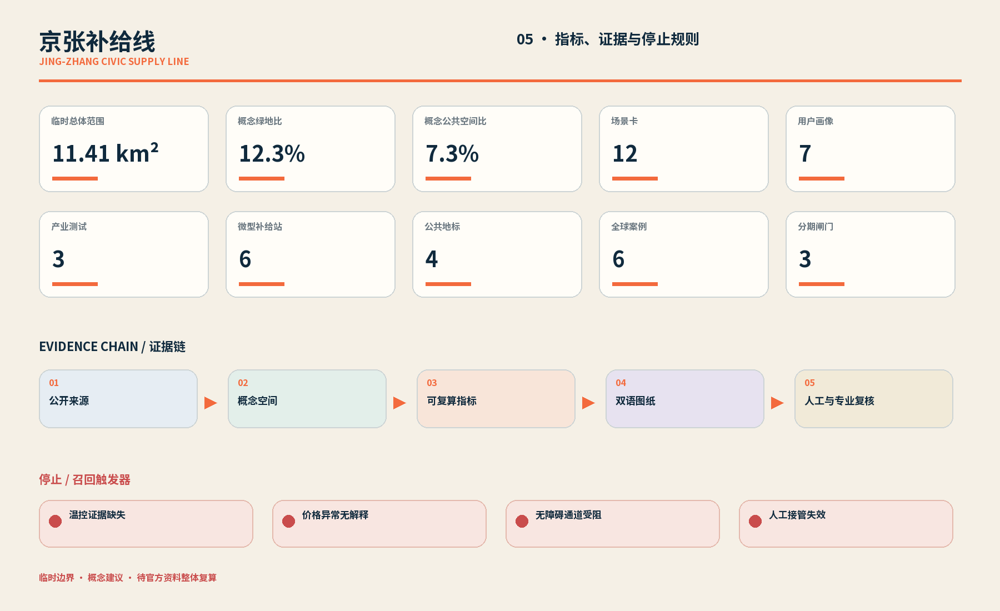

众智园 · 双站验证环
验证补给站 + 召回接管站｜冷链、低速配送与断电桌演
- AI-OFF
- HUMAN OWNER
- STOP + RESTORE
AI 城市先要守住：一杯水、一顿饭、一个座位和一条安全回家的路。
临时边界 · 概念建议 · 待官方资料整体复算
AI-OFF 基线：断网、停电或拒绝数字服务时，基本供给仍可获得。


验证补给站 + 召回接管站｜冷链、低速配送与断电桌演
共厨照护站 + 公共转介站｜照护餐、人工窗口与青年驻留
夜间补给站 + 安全归途站｜小商户接口与站城归途


先调查现状、权属、消防与文保；未经核实不作拆留结论。
优先轻量、可逆、可迁移的人工窗口与服务构件。
撤场后恢复普通通行与基本公共服务。
证据断裂即隔离召回
定位或急停失效即停机
越权或异常改价即回滚
电话、纸票与人工清点
错送或过敏风险即召回
资格判断必须转人工
歧视或保障不足即暂停
公示人工价保持可用
纸图、导视与人员协助
设备不安全即启替代点
现场封控优先于模型
人工指挥与纸面台账

公告与 Agent 任务进入覆盖矩阵
设计深度项保留证据链
强制专业标准逐项回应
基本服务不依赖模型或手机
临时边界，仅内容审稿就绪；不得解释为官方红线。
温控、价格、无障碍或人工接管失败均触发停止。
官方资料到位后统一替换全部图层、指标、图纸与网页。
临时边界 · 概念建议 · 待官方资料整体复算
当前临时总体边界与公开 OSM 遗址公园参考存在位置不一致风险；OSM 仅作背景核对，不进入正式边界或面积依据。